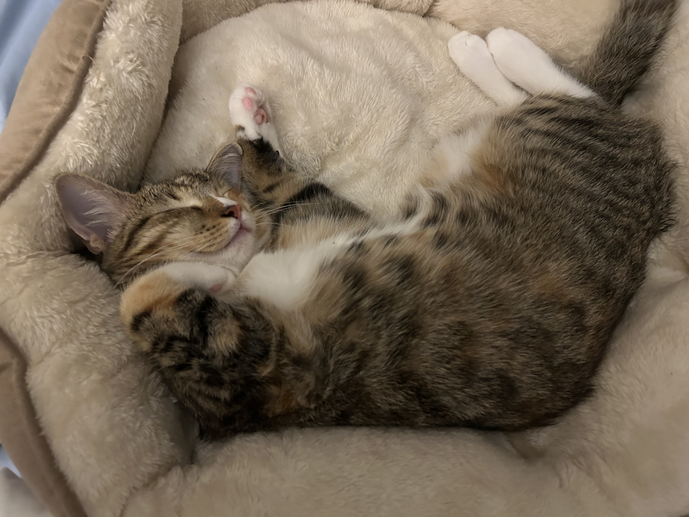
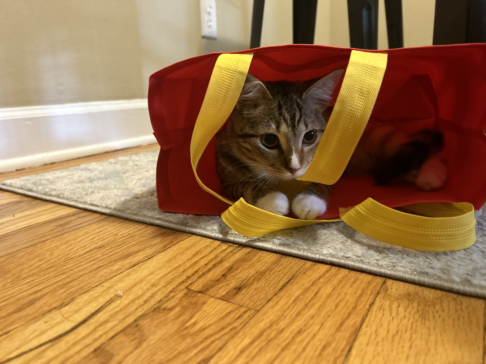
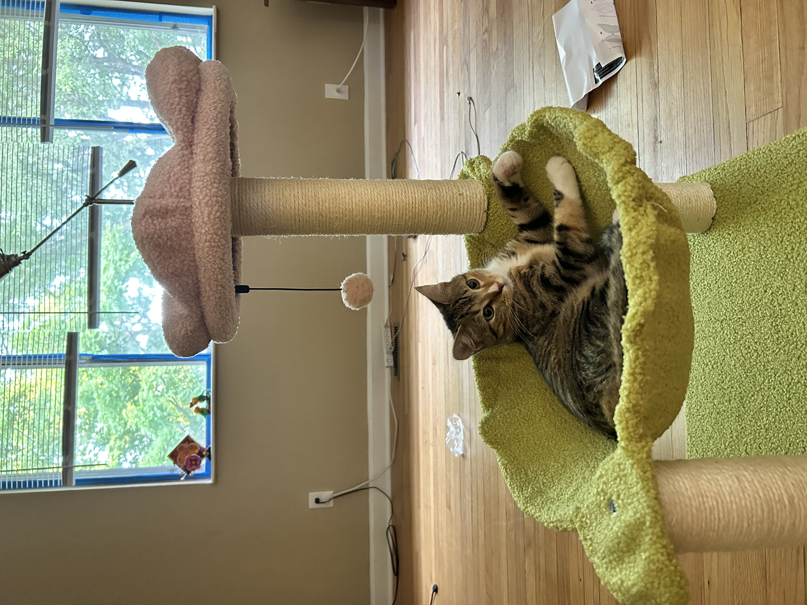

Meet Daisy
Daisy is a playful, curious, and lovable cat. She enjoys her food and cuddling up with people. She enjoys watching everything that you do
Why Daisy is Special
From her fluffy tail to her charming personality, Daisy always knows how to brighten anyone's day. She is always at the door ready to greet you when you come home!